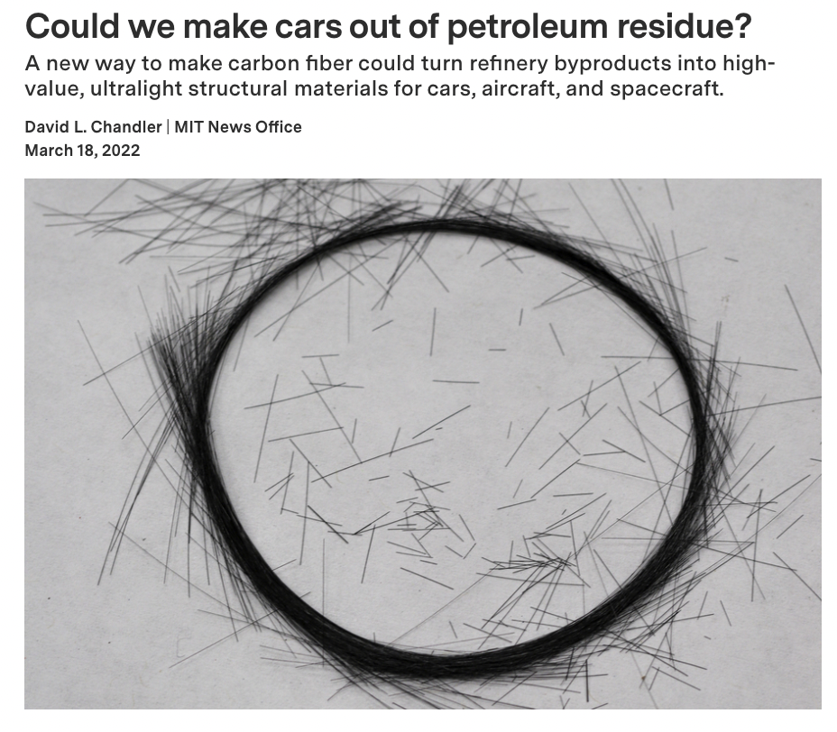
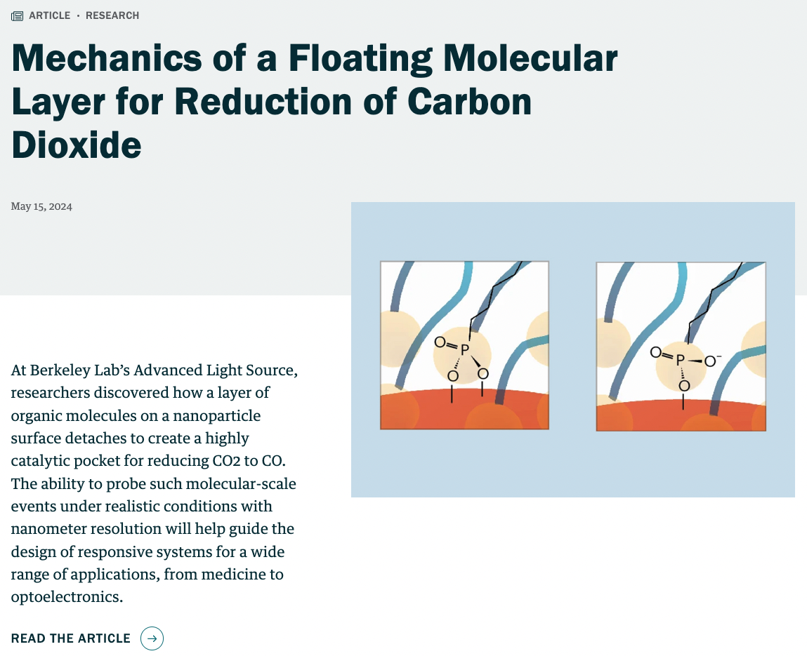
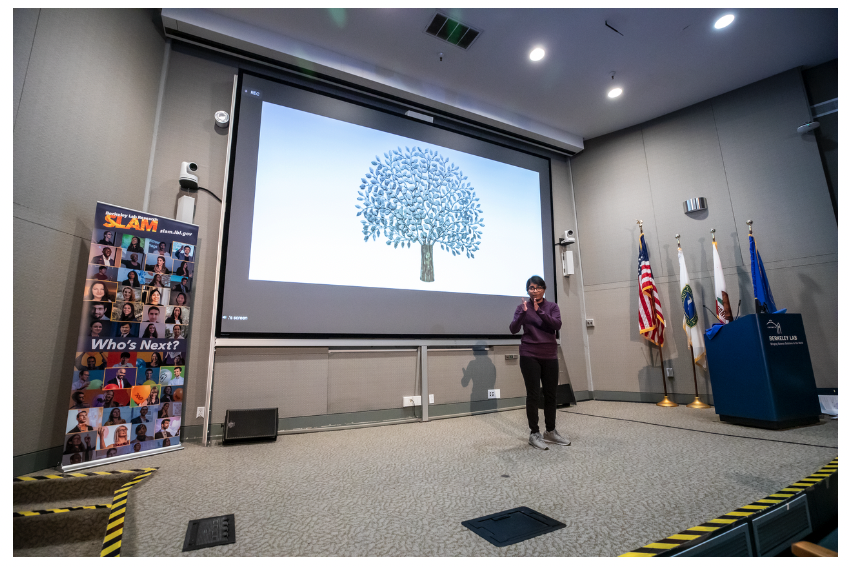
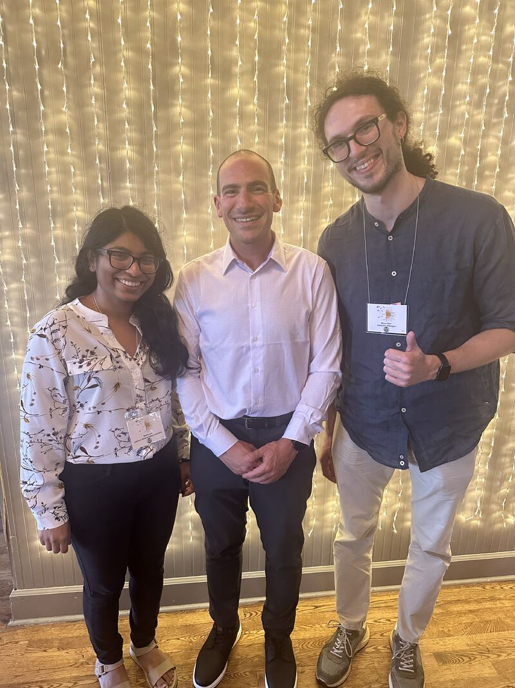

-

- Research on Carbon fibers featured in MIT News and other media outlets: [MITNews] [Natureworldnews] [TheDrive] [IOM3] [YahooNews] [DailyMail]
- Research on Nanoconfined electrocatalysts featured in Advanced Light Source (ALS) News and Lawrence Berkeley National Laboratory (LBNL) Newsletter: Elements): [ALSNews] [Elements]
- Finalist in the Berkeley Lab SLAM 2023– a three-minute research talk [YouTubeVideo] ; Interview featured in LBNL Newsletter: Elements: [Elements] [SlamWebsite]
- Winner of the three-minute lightning round talk at the 2nd Gerischer Electrochemistry Today Symposium; highlighted by Royal Society of Chemistry (RSC): [LinkedInPage]
- Recipient of a DOE Office of Science Travel Award for the 2nd Gerischer Electrochemistry Today Symposium
- Recipient of the S Anantharamakrishnan Memorial Prize for the best dual degree academic record in the Department of Metallurgical and Materials Engineering, IIT Madras
- Recipient of the Sri Satish Pai Prize for the best academic record for the 3rd and 4th semesters in the Department of Metallurgical and Materials Engineering, IIT Madras
- One of the 160 students from India selected for DAAD-WISE program for the year 2016
- One of the 750 students from six countries selected for Mitacs Globalink Research Internship program for the year 2015
- Selected for Kishore Vaigyanik Protsahan Yojana KVPY scholarship 2012 with All India Rank of 613
- Placed in the Top 1% among 40000 students in the National Standard Examination in Physics, India, 2011


